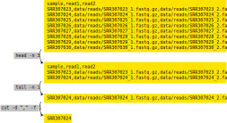

8 Job Parallelisation
- Distinguish between different kinds of parallel computations: multi-threading within a job and job parallelisation across independent jobs.
- Use LSF job arrays to automatically submit several parallel jobs.
- Customise each parallel job of an array to use different input -> output.
8.1 Parallelising Tasks
One of the important concepts in the use of a HPC is parallelisation. This concept is used in different ways, and can mean slightly different things.
A program may internally support parallel computation for some of its tasks, which we may refer to as multi-threading or multi-core processing. In this case, there is typically a single set of “input -> output”, so all the parallel computations need to finish in order for us to obtain our result. In other words, there is some dependency between those parallel calculations.
On the other hand, we may want to run the same program on different inputs, where each run is completely independent from the previous run. In these cases we say the task is “embarrassingly parallel”. Usually, running tasks completely in parallel is faster, since we remove the need to keep track of what each task’s status is (since they are independent of each other).
Finally, we may want to do both things: run several jobs in parallel, while each of the jobs does some internal parallelisation of its computations (multi-threading).

Some software packages have an option to specify how many CPU cores to use in their computations (i.e. they can parallelise their calculations). However, in their documentation this may be referred to as cores, processors, CPUs or threads, which are used more or less interchangeably to essentially mean “how many calculations should I run in parallel?”. Although these terms are technically different, when you see this mentioned in the software’s documentation, usually you want to set it as the number of CPU cores you request from the cluster.
8.2 Job Arrays
There are several ways to parallelise jobs on a HPC. One of them is to use a built-in functionality in LSF called job arrays.
Job arrays are a collection of jobs that run in parallel with identical parameters. Any resources you request (e.g. -n, -R, -M -W) apply to each individual job of the “array”. This means that you only need to submit one “master” job, making it easier to manage and automate your analysis using a single script.
Job arrays are created with the -J option -J arrayName[start-finish] where arrayName becomes the Job Name and start and finish are integers defining the range of array numbers created by LSF. For example, setting -J testJob[1-3] would result in three jobs sent: testJob[1], testJob[2], and testJob[3].
If you’d like to specify the -J option within the script header with #BSUB, it needs to be one of the first arguments listed. We recommend placing it as the third, below -G and -q options.
With this array list option within -J, LSF then creates a special shell variable $LSB_JOBINDEX, which contains the array number for the job being processed. Later in this section we will see how we can use some tricks with this variable to automate our analysis.
For now let’s go through this simple example, which shows what a job array looks like (you can find this script in the course folder job_scripts/parallel_arrays.sh):
# ... some lines omitted ...
#BSUB -J parallel[1-3]
#BSUB -o job_logs/parallel_arrays_%I.out
#BSUB -e job_logs/parallel_arrays_%I.err
echo "This is task number $LSB_JOBINDEX"
echo "Using $LSB_MAX_NUM_PROCESSORS CPUs"
echo "Running on:"
hostnameSubmitting this script with bsub job_scripts/parallel_arrays.sh will launch 3 jobs.
The %I keyword is used in our output filename (-o and -e) and will be replaced by the array number, so that we end up with three files: parallel_arrays_1.out, parallel_arrays_2.out and parallel_arrays_3.out.
You could optionally also include the %J keyword to add the Job ID number to the file name.
You can investigate the results using head -n 4 job_logs/parallel_arrays*out.
Looking at the output in those files should make it clearer that $LSB_JOBINDEX stores the array number of each job, and that each of them uses 2 CPUS (-n2 option). The compute node that they run on may be variable (depending on which node was available to run each job).
You can define job array numbers in multiple ways, not just sequentially.
Here are some examples:
| Option | Description |
|---|---|
-J jobName[0-31] |
index values between 0 and 31 |
-J jobName[1,3,5,7] |
index values of 1, 3, 5 and 7 |
-J [1-100]%10 |
index values between 1 and 100, batching 10 elements to run at the same time. |
8.2.1 Exercise
8.3 Using $LSB_JOBINDEX to Automate Jobs
One way to automate our jobs is to use the job array number (stored in the $LSB_JOBINDEX variable) with some command-line tricks. The trick we will demonstrate here is to parse a CSV file to read input parameters for our scripts.
For example, in our data/ folder we have the following file, which includes information about the samples we want to process:
cat data/drosophila_sample_info.csvsample,read1,read2
SRR307023,data/reads/SRR307023_1.fastq.gz,data/reads/SRR307023_2.fastq.gz
SRR307024,data/reads/SRR307024_1.fastq.gz,data/reads/SRR307024_2.fastq.gz
SRR307025,data/reads/SRR307025_1.fastq.gz,data/reads/SRR307025_2.fastq.gz
SRR307026,data/reads/SRR307026_1.fastq.gz,data/reads/SRR307026_2.fastq.gz
SRR307027,data/reads/SRR307027_1.fastq.gz,data/reads/SRR307027_2.fastq.gz
SRR307028,data/reads/SRR307028_1.fastq.gz,data/reads/SRR307028_2.fastq.gz
SRR307029,data/reads/SRR307029_1.fastq.gz,data/reads/SRR307029_2.fastq.gz
SRR307030,data/reads/SRR307030_1.fastq.gz,data/reads/SRR307030_2.fastq.gzThis is a CSV (comma-separated values) format, with three columns named “sample”, “read1” and “read2”. Let’s say we wanted to obtain information for the 2nd sample, which in this case is in the 3rd line of the file (because of the column names header). We can get the top N lines of a file using the head command (we pipe the output of the previous cat command):
cat data/drosophila_sample_info.csv | head -n 3This gets us lines 1-3 of the file. To get just the information about that 2nd sample, we can now pipe the output of the head command to the command that gets us the bottom lines of a file tail:
cat data/drosophila_sample_info.csv | head -n 3 | tail -n 1Finally, to separate the two values that are separated by a comma, we can use the cut command, which accepts a delimiter (-d option) and a field we want it to return (-f option):
cat data/drosophila_sample_info.csv | head -n 3 | tail -n 1 | cut -d "," -f 1In this example, we use comma as a delimiter field and obtained the first of the values after “cutting” that line.
Schematically, this is what we’ve done:

So, if we wanted to use job arrays to automatically retrieve the relevant line of this file as its input, we could use head -n $LSB_JOBINDEX in our command pipe above. Let’s see this in practice in Exercise 2.
8.3.1 Exercise

Continuing from our previous exercise where we prepared our Drosophila genome for bowtie2, we now want to map each of our samples’ sequence data to the reference genome.
Looking at our data directory (ls hpc_workshop/data/reads), we can see several sequence files in standard fastq format. These files come in pairs (with suffix “_1” and “_2”), and we have 8 different samples. Ideally we want to process these samples in parallel in an automated way.
We have also created a CSV file with three columns in the data directory. One column contains the sample’s name (which we will use for our output files) and the other two columns contain the path to the first and second pairs of the input files. With the information on this table, we should be able to automate our data processing using a LSF job array.
- Use nano to open the LSF submission script in
job_scripts/parallel_drosophila_mapping.sh. The first few lines of the code are used to fetch parameter values from the CSV file, using the special$LSB_JOBINDEXvariable. Fix the#BSUB -Joption to get these values from the CSV file.Hint
The array should have as many numbers as there are lines in our CSV file. However, make sure the array number starts at 2 because the CSV file has a header with column names. - Launch the job with
bsuband monitor its progress (bjobs), whether it runs successfully (bacct), and examine the LSF output log files. - Examine the output files in the
results/drosophila/mappingfolder. (Note: the output files are text-based, so you can examine them by using the command line programless, for example.)
8.4 Summary
- Some tools internally parallelise some of their computations, which is usually referred to as multi-threading or multi-core processing.
- When computational tasks are independent of each other, we can use job parallelisation to make them more efficient.
- We can automatically generate parallel jobs using LSF job arrays with the
bsuboption-J. - LSF creates a variable called
$LSB_JOBINDEX, which can be used to customise each individual job of the array.- For example we can obtain the input/output information from a simple configuration text file using some command line tools:
cat config.csv | head -n $LSB_JOBINDEX | tail -n 1
- For example we can obtain the input/output information from a simple configuration text file using some command line tools: